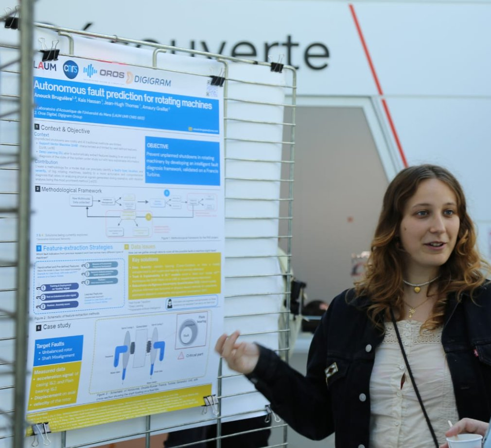

Anouck Bruguière
PhD student in vibration analysis for rotating machines using deep learning, at OROS (Montbonnot-Saint-Martin) and LAUM (CNRS, UMR 6613, Le Mans).

My name is Anouck Bruguière, and I am a multitasking young lady. In my spare time, I play the harp, but I’m also a failed figure skater (shameful side quest).
I’m originally from the South of France, which provides the perfect sunny lighting for my true calling: obsessing over things that spin. It’s a lifestyle, really, but first, let me explain.
After dreaming 1,000 different career paths, from pastry chef to journalist, I naturally chose the most chaotic neutral path possible: a dual bachelor’s in Physics and Music. Why choose one type of suffering when you can have two?
During my Master’s in Acoustics, I discovered my unhinged passion: ROTATING MACHINERY. I am now pursuing a PhD focusing on the vibes (literally) of water turbines (splashy), fans (windy) and ball mills (rocks in a blender). More about that on the research page.
I’m essentially one element away from becoming the Avatar. “Is it a man’s world?” maybe. But why leave all the fun to the men? Honestly, you’ve never stayed up until 3 AM analyzing the raw vibration signal of a Francis turbine?
Background
- 2025 to nowPhD student at OROS (Montbonnot-Saint-Martin) in collaboration with LAUM (CNRS, Le Mans)
- 2024Engineering degree in acoustics and vibrations, ENSIM (Le Mans), work-study programme with OROS
- 2023Certificate of Musical Studies in Harp and Music Theory, Conservatoire of Le Mans
- 2023Internship at Toyo Corporation (Tokyo, Japan): extended in C++ the A2S companion software for OROS instruments
- 2022 to 2025Support zone manager, then technical support engineer at OROS
- 2021Double bachelor’s degree in Physics and Music, Université Grenoble Alpes
Contact
The easiest way to reach me is LinkedIn.